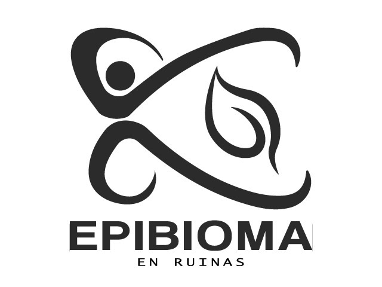

Epibioma en Ruinas - 2025
Género: Evento Artistico
Integrantes: La onceava generacion de Arte y Comunicación Digital
Statement: Epibioma en ruinas es una exposición que funciona como archivo activo. Presenta una serie de propuestas visuales y sonoras que surgen a partir de residuos, ruinas y datos. Cada sala constituye una cápsula especulativa: un posible escenario construido a partir de elementos del presente. Epibioma en ruinas plantea los escenarios para que puedas crear tu propia interpretación.
Esta exposición no busca seguir una narrativa de progreso, sino reflexionar sobre lo que permanece: lo alterado, lo fuera de lugar, lo contaminado. Es una colección de fragmentos activos, una recopilación de posibilidades surgidas después de una transformación. Es un ejercicio colectivo para imaginar desde la ruptura.